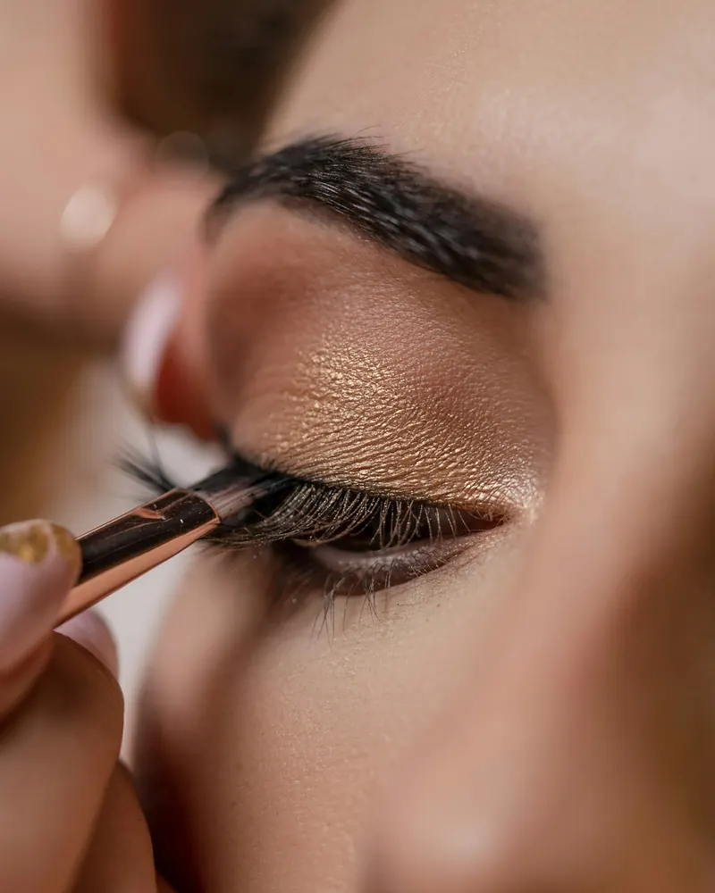

Makijaż permanentny
Brwi, kreska i usta, które wyglądają naturalnie i nie znikają po myciu twarzy. Zanim się zapiszesz, przeczytaj, jak się przygotować i jak przebiega gojenie.

Jak przebiega gojenie
Pigmentowane miejsce traktuj jak ranę. To, jak o nie zadbasz, w dużej mierze decyduje o efekcie.
- Dzień zabiegu
Kolor jest intensywny. Możliwe zaczerwienienie i lekka opuchlizna, zwykle mijają w 48 godzin.
- Dni 1-3
Pigment jeszcze ciemnieje. To normalne, nie oceniaj efektu w lustrze.
- Dni 5-9
Wyłuszczanie: odpadają drobne strupki. Nie drap, nie pocieraj, nie mocz i nie dotykaj.
- Dzień 28
Skóra jest wygojona, kolor stabilny i o 40-60% jaśniejszy niż zaraz po zabiegu.
- Po 6 tygodniach
Obowiązkowa korekta, wliczona w cenę. Uzupełniamy miejsca, wzmacniamy kolor, na życzenie lekko zmieniamy kształt.
- 12-24 miesiące
Tyle zwykle utrzymuje się efekt. Odświeżenie zalecamy po 1-1,5 roku.
Przed zabiegiem
- 24 godziny bez alkoholu, kawy i leków przeciwbólowych
- nie reguluj brwi, kształt dobierzemy razem
- powiedz nam o lekach i chorobach, także tych „niezwiązanych”
Po zabiegu
- 2-3 tygodnie bez sauny, solarium, basenu i słońca
- nie drap i nie zdrapuj strupków
- stosuj się do zaleceń pielęgnacyjnych, które dostaniesz w gabinecie
Przeciwwskazania
- ciąża i karmienie piersią
- alergia na pigmenty, lidokainę lub preparat znieczulający
- nieustabilizowana cukrzyca
- zmiany skórne, infekcje i aktywna opryszczka w miejscu zabiegu
- choroby nowotworowe, chemioterapia
- świeże blizny, skłonność do bliznowców i keloidów
- nosicielstwo HIV, hemofilia
- arytmia serca, epilepsja
- bielactwo, łuszczyca w fazie aktywnej
- leki rozrzedzające krew, sterydy (także maści), retinoidy
- odżywki do brwi i rzęs w ostatnim miesiącu
- usta z wypełniaczem w ostatnich 3 miesiącach
To najważniejsze przeciwwskazania, nie wszystkie. W razie wątpliwości porozmawiamy na konsultacji.

Najczęstsze pytania
Czy makijaż permanentny to tatuaż?
Nie. To delikatna pigmentacja, która ma podkreślić naturalną urodę i uzupełnić braki, a nie zmienić twarz.
Czy korekta jest dodatkowo płatna?
Nie, korekta jest wliczona w cenę i obowiązkowa. Bez niej zabieg jest niedokończony. Robimy ją po 6 tygodniach, nie wcześniej.
Od czego zależy trwałość?
Od rodzaju i grubości skóry, opalania, pielęgnacji, zabiegów kosmetycznych, chorób i wahań hormonalnych.
A jeśli nie wiem, czy mogę?
Zadzwoń. Wszystkie wątpliwości rozwiejemy na konsultacji, a zatajenie informacji o zdrowiu lub lekach może być niebezpieczne, więc pytaj śmiało.